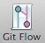
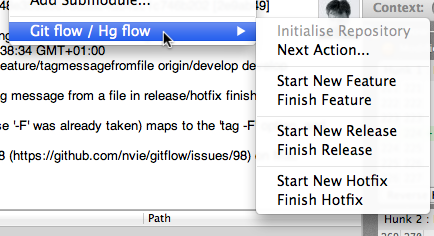

Introduction to Git Flow and Hg Flow

What is Git Flow / Hg Flow?
In short, they're higher level tools to standardise how you use multiple branches effectively in Git or Mercurial.
In early 2010, an article entitled "A successful Git branching model" was published by Vincent Driessen, describing a standardised approach to using git branches in your development cycle. The idea was to formalise the branching and merging actions that you perform when developing features, handling releases and managing hot fixes, so that every developer on a project took the same approach. In addition to promoting a consistent workflow, it also had the potential to reduce the training a new developer would need before they were developing with git in a way which leveraged the power of git (specifically its granular branching and merging). However, the problem was you needed to remember the rules to this system.
So, shortly after that, a series of scripts called git-flow provided a higher-level way to perform those actions so that you wouldn't have to remember how to manually do them. Subsequently, a Mercurial extension called Hg Flow implemented the same idea for Mercurial.
SourceTree now makes it even simpler by integrating this automation and presenting it to you in a friendly, easy to use way.
Summary of the concept
The general idea is that you use the following branches in your repository:
- Development branch (usually called 'develop')
This is your main development branch where all the changes destined for the next release are placed, either by committing directly for small changes, or by merging other branches (e.g. feature branches, discussed later) - Production branch (usually called 'master' in Git, 'default' in Mercurial)
This branch represents the latest released / deployed codebase. Only updated by merging other branches into it. - Feature branches (usually prefixed with 'feature/')
When you start work on anything non-trivial, you create a feature branch. Later on, you'll merge this back into the development branch to queue it for the next release. - Release branches (usually prefixed with 'release/')
When you're about to package a new release, you create a release branch from the development branch. You can make more commits to it during your preparation for release, and when it's ready to be deployed you merge it back into both the development branch, and the master branch (to indicate it's deployed). - Hotfix branches (usually prefixed with 'hotfix/')
If you need to patch the latest release without picking up new features from the development branch, you can create a hotfix branch from the latest master branch (which is the latest deployed code). Once you've made your changes, the hotfix branch is then merged back into both the master branch (to update the released version) and the development branch (to make sure the fixes go into the next release too)
How to use Git Flow / Hg Flow in SourceTree
There are two ways to perform 'flow actions' in SourceTree:
From the Repository toolbar:

(this is labelled 'Hg Flow' in Mercurial)
This toolbar button gives you a selection of actions based on the current state of the repository. So if you're currently on a feature branch, the default action it will offer you is to finish your current feature. You can also get to other actions from here, but most of the time the default one is the one you'll want to use. If your repository is currently not set up to use Git Flow / Hg Flow, then the toolbar button will bring up the initialisation window.
Alternatively, from the Repository menu bar:

This menu lets you access all the possible actions that you can perform (the special case is the 'Next Action' option which does the same thing as the toolbar button). Each action is covered in more detail in the Flow Actions section.